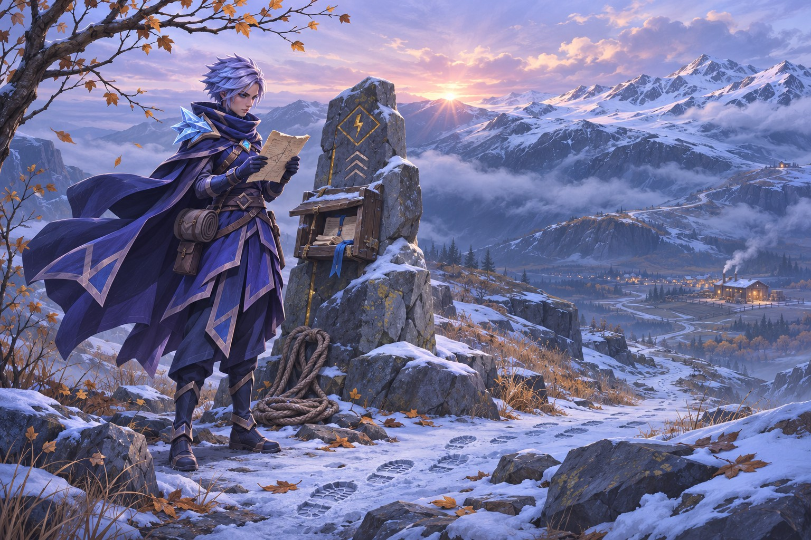
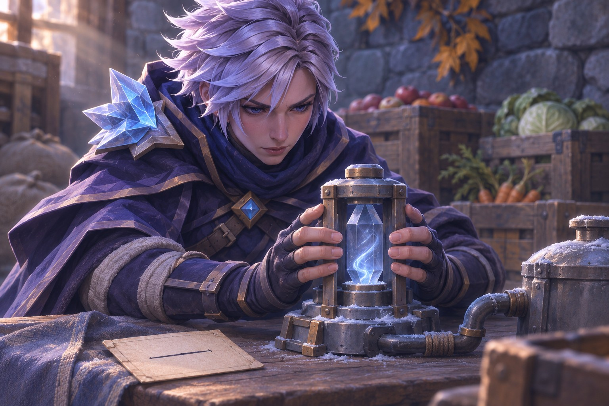
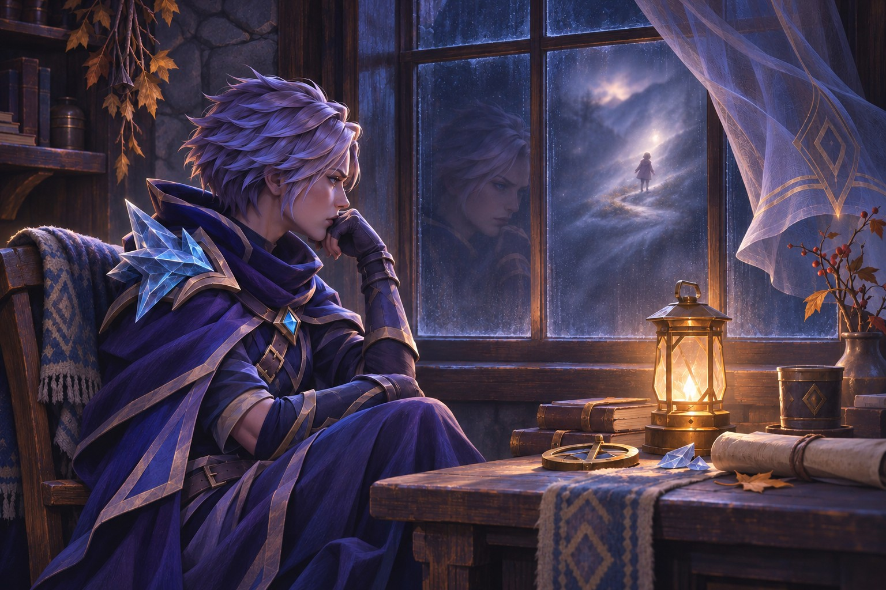
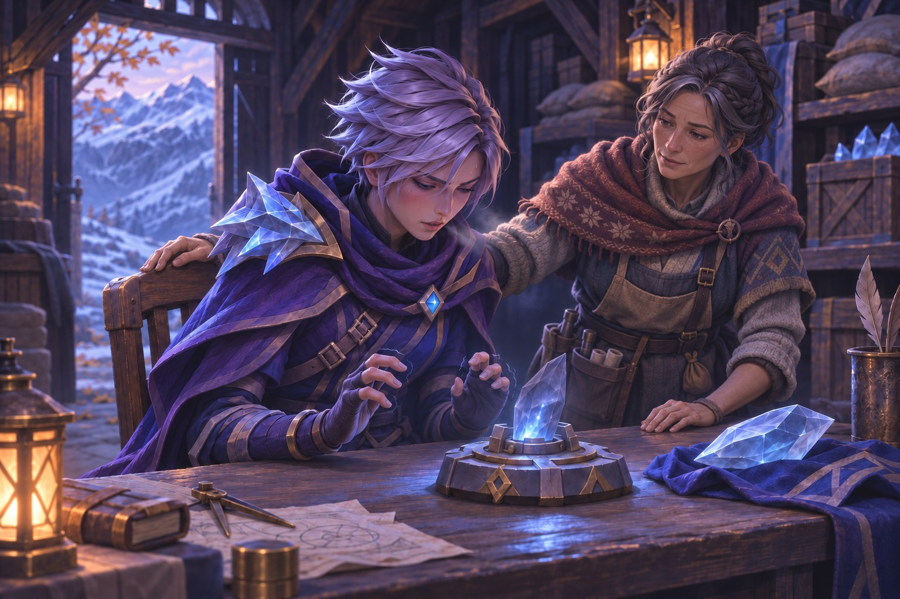
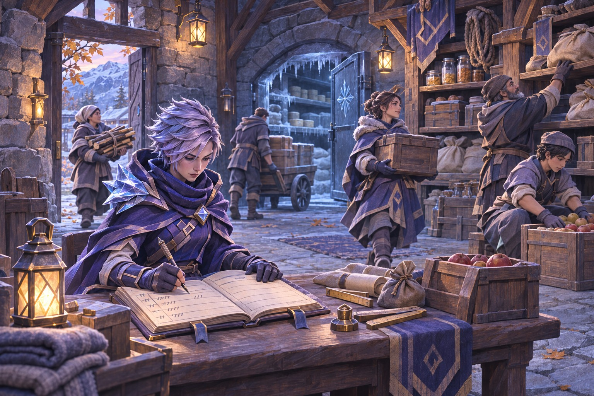
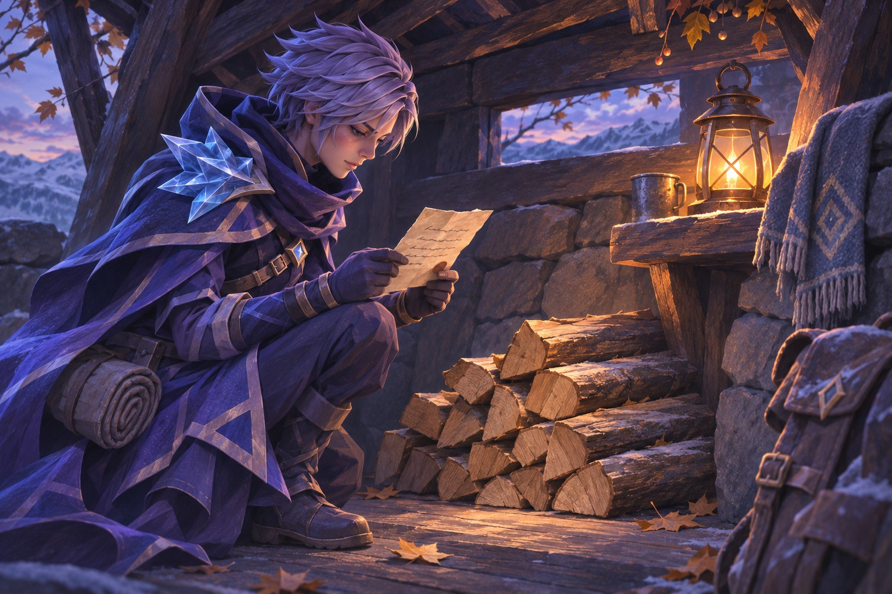
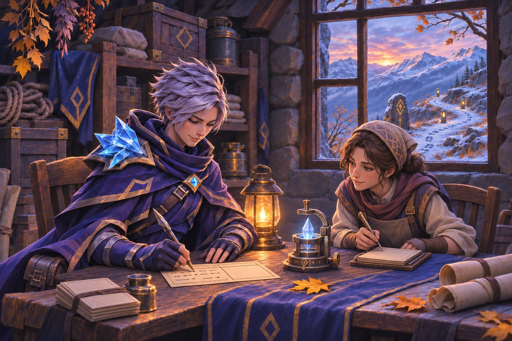

Droga budzi się pierwsza
W Nivoren dzień zaczyna się od sprawdzenia drogi.
Była późna jesień. Górskie grzbiety przyprószył już pierwszy śnieg, lecz w dolinie chłodne dni wciąż przeplatały się z cieplejszymi.
Zanim otworzą się warsztaty i zanim ktokolwiek zajrzy do magazynu, ktoś wychodzi przed schronisko i patrzy na przełęcz. Nie po to, żeby zobaczyć, czy jest piękna. Po to, żeby sprawdzić, czy noc nie zmieniła jej w coś innego.
Śnieg potrafi zasłonić głęboki rów i wygładzić ślad po osuwisku. Wiatr nawiewa go na kamienne znaczniki. Zamarznięty strumień wygląda jak skrót, dopóki nie pęknie pod ciężarem wozu. Dlatego na szlaku liczą się rzeczy małe: sznur zawiązany na słupku, świeży odcisk buta, odłamek ciemnego kamienia położony na jasnym śniegu. Każdy znak ma sens tylko wtedy, gdy ktoś pamięta, kto go zostawił i kiedy.
Tego ranka patrzyłam na grzbiet nad Białym Przesmykiem. Chmury wisiały nisko, ale nie schodziły jeszcze w dolinę. Na kamiennym słupku przy drodze widniała data ostatniego obchodu. Ktoś dopisał obok mały znak: „powrót przed zmrokiem”. Nie wiedziałam, kto go zostawił. Wiedziałam za to, że od wczoraj nikt nie potwierdził stanu górnego odcinka.
Wróciłam do magazynu.
Mieszkańcy Nivoren umieją czekać, ale czekanie nie oznacza bezczynności. Jedni sprawdzają zapasy na zimę, inni naprawiają drzwi schroniska albo wymieniają się wieściami o drodze. Przy stole ktoś zostawił kubek z wodą, obok niego leżała lista rzeczy potrzebnych następnemu konwojowi. Mąka, suszone warzywa, igły do szycia grubego płótna, smar do osi. Drobiazgi, dopóki ich nie zabraknie.
W chłodni czekały dwie skrzynie żywności. Jedna przyjechała z Verdan, druga zawierała zapasy miejscowe. Wskaźnik temperatury drgnął, potem zatrzymał się o kreskę wyżej niż poprzedniego wieczoru.
— Dasz radę utrzymać stałą temperaturę? — spytała opiekunka magazynu. — Zapasy wciąż spływają. Muszą wytrzymać do zimy. Jeszcze kilka tygodni, a jeśli chłód się utrzyma, otworzymy chłodnie zewnętrzne.
Popatrzyłam na kryształ w obudowie. Był prawie pusty.
— Mogę spróbować.
Nie powiedziałam, jak długo mogę próbować. Tego nie wiedziałam, dopóki nie zaczęłam.

Ile mieści się w dłoniach
Kryształ był niewielki, osadzony w ramie chłodzącego urządzenia. Nie dawał zimna sam z siebie. Przyjmował energię, przechowywał ją, a mechanizm wykorzystywał ją potem do pracy. Kiedy zapas malał, ściany chłodni powoli przestawały odbierać ciepło od skrzyń.
Ułożyłam dłonie po obu stronach kryształu. Nie dotykałam go od razu. Najpierw uspokoiłam oddech i odsunęłam z myśli listę rzeczy, które jeszcze miałam zrobić: zapisać temperaturę, sprawdzić wentyl, odnieść narzędzia, wrócić na szlak, zajrzeć do schroniska.
Ruvan uczył mnie, że nie wolno mylić skupienia z siłą. Kryształ nie był drzwiami, które należało wyważyć. Trzeba było znaleźć kierunek, w którym przyjmował moc, i prowadzić ją spokojnie.
Poczułam chłód pod skórą. Z początku był lekki jak oddech zimowego poranka. Potem zaczął ciążyć. Kryształ rozjaśnił się od środka, a drobne żyłki w jego powierzchni nabrały srebrnego blasku. Nie widziałam, ile energii już zgromadził. Mogłam jedynie kontrolować własny oddech i pilnować, by nie próbować przyspieszać.
Po chwili ramiona zesztywniały mi od napięcia. Zatrzymałam przepływ.
— Już? — spytała opiekunka magazynu.
— Na teraz.
Uśmiechnęła się, ale spojrzała na wskaźnik chłodni. Blask kryształu był słaby. Nie wystarczy na całą dobę. Być może wystarczy do wieczora, jeśli drzwi będą zamykane szybko.
Przez lata nauki i pracy nauczyłam się ładować kryształy bez gwałtownego wtłaczania w nie mocy. Nie nauczyłam się jednak robić tego bez wysiłku. Energia nie pojawiała się za darmo tylko dlatego, że byłam magiem. Po każdym ładowaniu ciało przypominało mi o granicy: ciężkimi rękami, suchością w ustach, zmęczeniem, które zbierało się pod żebrami.
Kiedy byłam młodsza, próbowałam tę granicę przesuwać. Wydawało mi się, że skoro potrafię coś zrobić, powinnam zrobić tego więcej. Że jeśli odpuszczę, ktoś będzie miał zimny posiłek albo nie doczeka się lekarstwa.
Teraz wiedziałam, że mogę przekazać kryształowi tylko tyle mocy, ile sama zdołam bezpiecznie z siebie wydobyć. Nie wiedziałam jeszcze, czy umiem zaakceptować, że to czasem za mało.
Zanotowałam godzinę i wynik na karcie. Moja ręka drżała tak lekko, że kreska wyszła krzywa. Poprawiłam ją, po czym skreśliłam poprawkę. Zapis powinien mówić prawdę o tym, co się stało, nie udawać, że wszystko przebiegło równo.

Schronisko przy zakręcie
Po ponad dwóch godzinach szybkiego marszu dotarłam do schroniska. Niosłam tylko lekki pakunek suchego drewna, ale ścieżka wiodła pod górę, a wiatr wciskał śnieg pod kołnierz. Schronisko stało na trasie, między osadą z chłodniami a przełęczą — daleko od miejskiego zgiełku, lecz dokładnie tam, gdzie podróżny mógł potrzebować dachu. Przy zakręcie dwie drogi rozchodziły się między skałami. Jedna była krótsza, ale prowadziła wąskim przejściem narażonym na wiatr. Druga omijała grzbiet, a podróż nią trwała prawie pół dnia dłużej. Żadna nie była zawsze bezpieczna.
Nad zakrętem stała wieża szlakowa. Na samej górze, w metalowej oprawie, spoczywała ogromna bryła splotytu. Świeciła mocnym, chłodnym błękitem, w którym przeskakiwały jaskrawożółte wyładowania Błyskawic. Nie dawała ciepła sama z siebie; zgromadzona w niej energia zasilała urządzenia wieży, które pomagały utrzymać połączenie na głównym trakcie.
Za przeglądy takich wież na wspólnych szlakach odpowiadała Rada. Organizowała obsługę, a miejscowe ekipy mogły w razie potrzeby doładować kryształ. Do utrzymania sieci dokładały się krainy, w tym bogatsze Zerath, gdzie łatwiej było pozyskiwać energię Błyskawic. Nie wiedziałam, czy tę bryłę ostatnio doładowali miejscowi, czy energia dotarła do niej połączeniem z Val Meris albo aż z Zerath.
Rano mały kryształ chłodni ledwie przyjął tyle mocy, ile zdołałam mu przekazać. Spojrzałam na ogromny błękitny kamień wysoko nad sobą i pomyślałam: dobrze, że tego nie muszę ładować.
Nie była to ulga z lenistwa. Nie chciałam nawet zgadywać, ile kosztowałoby napełnienie takiej bryły ani ile sił wymagałoby to ode mnie. Wieża nie była moja; odpowiedzialność za jej zasilanie nie spoczywała na mnie. Przez krótką chwilę ta myśl wydała mi się niemal tak cenna jak światło na szczycie.
W środku pachniało mokrą wełną, dymem i zupą, którą ktoś zostawił w garnku dla wracających z patrolu. Przy ścianie leżał stos drewna. Nie był duży. W Nivoren część rodzin zostawiała w schroniskach zapas dla następnych podróżnych, jeśli sama miała czym ogrzać dom. Inni mogli przynieść tylko garść szczap albo worek suszonych korzeni. Każda pomoc wyglądała inaczej.
Na stole leżała mapa. Jej róg obciążał kamień. Trasa do północnej osady miała trzy oznaczenia: jedno sprzed tygodnia, drugie bez daty i trzecie dopisane tego ranka. Przy każdej informacji ktoś wpisał inicjały. Przy ostatniej nie było żadnych.
Usiadłam, żeby poprawić zapis. Dopisałam: „Niepotwierdzone. Ostatni wiarygodny obchód: wczoraj, do rozwidlenia”. Nie wiedziałam, czy dalej leży śnieg, czy droga jest zamknięta. Mapa nie stawała się lepsza od samego patrzenia na nią.
Lubiłam takie chwile. Przy stole ludzie mówili o sprawach, które w wielkich salach brzmiałyby zbyt mało ważnie: komu przemokły rękawice, kto oddał ostatnią świecę, ile jeszcze zostało mąki w górnym magazynie. Ale właśnie z takich rzeczy składało się bezpieczeństwo. Nie z jednej wieży ani jednego zaklęcia. Z wielu małych decyzji, których nie dało się podjąć raz na zawsze.
Kiedy wracałam, minęłam dwa wozy jadące w dół. Jeden miał na burcie ślad po naprawie; worek wieziony na drugim przykryto płótnem. Przewoźnicy zapytali, czy droga przy strumieniu jest jeszcze otwarta. Powiedziałam, co wiedziałam, i dodałam, czego nie sprawdziłam.
— Czyli nie wiesz — powiedział jeden z nich.
— Wiem, gdzie kończą się moje informacje.
Nie odpowiedział. Zostawił mi za to małą paczkę suszonych jabłek z Verdan. Schowałam ją do kieszeni. Miała być dla magazynu, ale po drodze zjadłam jeden kawałek. Był kwaśny i słodki jednocześnie. Przypomniał mi, że gdzieś daleko ktoś zbierał owoce, nie wiedząc, w jakim schronisku zostaną zjedzone.
Huk, którego nie umiem zmierzyć
Wieczorem wiatr zaczął uderzać w okna. Nie był mocny, ale miał ten sam rytm co tamtego dnia: szarpnięcie, przerwa, szarpnięcie.
Miałam osiem lat, kiedy podczas wydarzeń Nocy Zgasłych Wież urządzenia magazynowe w Białym Przesmyku zaczęły wybuchać.
Nie wiedziałam, dokąd biec. Uciekłam w góry, bo chciałam oddalić się od huków i świateł, których nie umiałam pojąć. Nie pamiętam całej drogi ani chwili, w której przestałam biec. Pamiętam tylko jej urywki: białą smugę na ścianie, czyjąś rękę na moim ramieniu, śnieg, który nagle przestał być jasny. Pamiętałam ciężar własnych nóg i to, że nie mogłam złapać tchu. Nie pamiętałam, co wydarzyło się tuż przed pierwszym hukiem.
Przez długi czas powtarzałam sobie, że jeśli uda mi się odzyskać brakującą chwilę, zrozumiem wszystko. Dziecko chce, by groza miała przyczynę, którą można nazwać. Jeśli zna nazwę, może wyobrazić sobie, jak jej uniknąć.
Na zboczu znalazł mnie Ruvan. Nie wypytywał od razu o to, czego nie umiałam opowiedzieć. Przygarnął mnie i dał mi czas. Nie obiecywał, że wyjaśni tamten dzień. Pokazał mi pierwsze elementy magii Lodu i uczył prowadzić moc kryształów z uwagą, zamiast wymuszać na nich działanie. Pierwsze ćwiczenia trwały tak krótko, że złościłam się, gdy kazał mi przestać. Chciałam od razu umieć więcej. Ruvan mówił, że zmęczenie też jest informacją. Wtedy nie lubiłam tego zdania.
Z czasem, widząc, jak szybko uczyłam się rozumieć kryształy, wykorzystał dawne kontakty i zdobył dla mnie stypendium w szkole magów w Val Meris, nieoficjalnej stolicy kontynentu. Szkoła dała mi teorię i szerokie podstawy, ale praktycznej kontroli zimna nie uczyła tak, jak potrzebowałam. Podczas przerw wracałam do rodzinnego Białego Przesmyku. Wtedy Ruvan pokazywał mi, jak władać chłodem w rzeczywistych warunkach: powoli, uważnie i bez walki z własnymi granicami.
Później pracowałam przy chłodzeniu magazynów. Widziałam kryształy, które działały równo, gdy były właściwie dobrane i obsługiwane. Widziałam urządzenia, które wymagały naprawy. Widziałam też, jak łatwo ludzie przypisują pewność temu, co akurat pomaga im podjąć decyzję.
Żaden z tych widoków nie powiedział mi, dlaczego urządzenia wybuchły, kiedy byłam dzieckiem. Ani mój strach, ani wiedza, ani praca nie zamieniały się w dowód.
Przyłożyłam dłoń do chłodnej ściany. Za nią skrzynie zachowywały temperaturę. Kryształ po porannym ładowaniu nie zgasł, ale jego blask osłabł.
Zastanawiałam się, czy jutro znów spróbuję dodać mu mocy.

Jeszcze jeden kryształ
Następnego ranka chłodnia była cieplejsza.
Niedużo. Wystarczająco, by zauważyć różnicę, ale zbyt mało, by wiedzieć, kiedy zapasy ucierpią. W magazynie czekały jeszcze dwa kryształy. Jeden zasilał urządzenie do przechowywania żywności. Drugi miał być przygotowany do zimowego schronu. Jeśli doładuję oba, chłodnia może wytrzymać dłużej. Jeśli spróbuję, mogę nie mieć siły dokończyć pracy.
Opiekunka magazynu nie prosiła mnie o cud. Powiedziała tylko, że dostawa części została opóźniona i nie wiadomo, kiedy dotrze następna.
— Mogę spróbować doładować jeszcze jeden — powiedziałam.
Usiadłam przy kryształach. Tym razem nie czekałam, aż oddech stanie się równy. Zaczęłam od razu, jakbym mogła nadrobić pośpiechem to, czego brakowało w zapasach.
Moc lodu odpowiedziała. Przepływ ruszył, kryształ rozjaśnił się. Przez pierwsze chwile czułam tylko skupienie. Potem napięły mi się nadgarstki. Palce zrobiły się ciężkie. W gardle poczułam suchość, a oddech zaczął się rwać.
Mogłam przerwać.
Nie przerwałam.
Pomyślałam o żywności, która miała przetrwać zimę. O rodzinach, które liczyły na zapasy w schroniskach. O ludziach z innych krain, którzy wysyłali do nas to, czego nie mogliśmy sami wyhodować. Pomyślałam, że jeśli zatrzymam moc za wcześnie, zostawię ich z pustym kryształem.
Wtedy dłonie zaczęły mi drżeć. Świat zwęził się do srebrnego światła i ciemnej krawędzi obudowy. Próbowałam oddychać wolniej, ale nie mogłam już odróżnić, czy prowadzę moc, czy tylko zaciskam ją w sobie.
Zatrzymałam się gwałtownie.
Kryształ był naładowany, lecz nie tak, jak chciałam. Odsunęłam ręce. Przez chwilę nie mogłam wstać. Nie upadłam. Po prostu nie ufałam nogom na tyle, by od razu przenieść ciężar ciała.
— Wystarczy na dziś — powiedziała opiekunka magazynu.
Chciałam zaprzeczyć. Zamiast tego skinęłam głową.
Zmęczenie nie było dowodem, że magia jest zła, ani że kryształy są niebezpieczne. Było tylko informacją o mnie: ile mogłam dać, zanim dalsza praca przestawała być rozsądna.
Ale łatwiej było to wiedzieć, niż zaakceptować.

To, czego nie zrobię sama
Odpoczywałam przy piecu w schronisku. Ogień był niewielki; drewno trzeba było oszczędzać. Zjadłam kawałek chleba i suszone jabłko z poprzedniego dnia. Kwaśny smak ściągnął mi policzki.
Kiedy siły wróciły, wyszłam na zewnątrz. Z przełęczy schodził człowiek z pustym wózkiem. Powiedział, że na górnym odcinku śnieg przykrył jeden z kamiennych znaków. Nie wiedział, czy znacznik znajdował się tam wcześniej. Zapytałam, gdzie ostatnio widział znacznik, i zanotowałam odpowiedź. Nie mogłam sprawdzić całej drogi sama.
Wróciłam do magazynu i spojrzałam na dwa kryształy. Jeden wystarczył na pewien czas, drugi miał tylko część ładunku. Te dwa kryształy nie mogły zaspokoić wszystkich potrzeb. Można było jednak zmienić sposób korzystania z zapasów.
Poprosiłam, by chłodnia była otwierana tylko wtedy, gdy ktoś naprawdę musi wziąć skrzynię. Część jedzenia przenieśliśmy do najchłodniejszej komory, gdzie ściany trzymały zimno dłużej. Do schroniska zanieśliśmy drewno, a na mapie oznaczyliśmy odcinek, którego nikt tego dnia nie sprawdził. Nie było w tym nic wielkiego. Była za to praca, której nie musiałam wykonywać samymi dłońmi.
Wieczorem usiadłam przy stole i rozpisałam ładowanie na krótsze etapy. Zanotowałam, jak długo pracowałam, kiedy pojawiło się drżenie i ile energii przyjął kryształ. Nie chciałam, by następna osoba musiała zgadywać, czy mój wynik był normą. Nie chciałam też, żeby ktoś uznał, że skoro raz mi się udało, mogę robić to bez końca.
Przy karcie zostawiłam miejsce na cudzy wpis. Ktoś mógł dopisać własny pomiar albo zauważyć błąd. Wspólny zapis nie sprawiał, że stawałam się mniej potrzebna. Sprawiał, że nie musiałam być jedyną osobą, od której zależało, czy chłodnia przetrwa noc.
Pomyślałam o Ruvanie. Przypomniałam sobie, jak zatrzymywał ćwiczenie, zanim zaczynałam walczyć ze zmęczeniem. Wtedy uważałam, że każe mi robić mniej. Teraz rozumiałam, że uczył mnie kończyć pracę tak, by móc do niej wrócić.

Światło, które zostaje
Kilka dni później śnieg przykrył ślady na górnej drodze. Nikt nie powiedział, że szlak jest otwarty. Ktoś poszedł sprawdzić pierwszy odcinek, wrócił i dopisał datę. Następnego dnia sprawdzono kolejny.
Chłodnia działała. Nie idealnie. Nie dzięki jednemu długiemu ładowaniu. Kryształ oddawał energię powoli, a my zaglądaliśmy do niego, zapisywaliśmy pomiary i oszczędzaliśmy zapas. Kiedy przyszła pora na kolejne ładowanie, najpierw zjadłam posiłek i odpoczęłam.
Nie czułam się przez to odważniejsza. Czułam się zwyczajnie zmęczona, jak po pracy, która zajęła cały dzień. Tym razem jednak wiedziałam, kiedy zrobić przerwę. Gdy palce zaczęły drżeć, odsunęłam dłonie od kryształu.
W oknie magazynu odbijał się blask. Przez moment znów zobaczyłam białe światło z dzieciństwa. Potem poruszyłam głową i odbicie zmieniło się w małą lampę zawieszoną nad stołem.
Nie wiedziałam, co wydarzyło się wtedy w Białym Przesmyku. Wciąż chciałam poznać zapisy, których nie mogłam przeczytać. Wciąż bałam się, że kiedyś podobny huk znów przerwie ciszę. Nie zamierzałam udawać, że te myśli zniknęły.
Ale nie pozwoliłam im decydować za mnie o każdym kryształowym urządzeniu, które widziałam.
Na szlaku ktoś zostawił nowy pakunek drewna. Obok leżał kawałek papieru z datą i krótką wiadomością: „Dla następnych”. Nie znałam tej osoby. Nie musiałam znać jej imienia, by wiedzieć, że jutro ktoś może dzięki temu rozpalić ogień.

Wzięłam kartę pomiarową i dopisałam ostatni wynik. Obok zostawiłam puste miejsce na kolejny. Kryształ świecił słabo, lecz równo. Za oknem przełęcz czekała na poranny obchód.
Jutro znów trzeba będzie sprawdzić drogę.
Jutro znów trzeba będzie zapytać, co wiem, a czego tylko się domyślam.
Tym razem nie musiałam robić tego sama.
